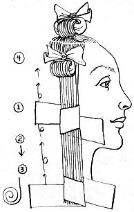

If you'd like to curl your hair but don't want to get into store-bought plastic rollers, metal pins and clips maybe you'll try the old time paper curl. The cost is nil and paper won't damage hair as do curlers of harder materials.
Find a brown paper bag and cut it into strips abort one and a half inches wide and eight inches long. Set dampened hair following the sequence in the illustration.
If you want tight curls, use a small amount of hair per each, more water and a thin pencil to form the paper roll. This should result in a wild bushy set. For gentle waves with larger ends, use more hair per curl and make a large, fat roll.
If you're going to sleep while your hair sets, you'll find paper curls more comfortable than metal or plastic. In the morning, untwist the paper ends, unroll the curl and out should tumble a corkscrew ringlet that you can comb or brush into your favorite style. Or leave bouncing as is.
The paper strips can be used more than once.
1.Wrap paper strip once or twice around hair. Keep hair flat and smooth.
2. Draw paper down until hair ends are neatly enclosed in paper.
3. Curl under or over. Roll around finger for uniform curl size. Roll up to desired length.
4. Twist paper ends firmly against curl. Twist twice.
|
 |
|
|